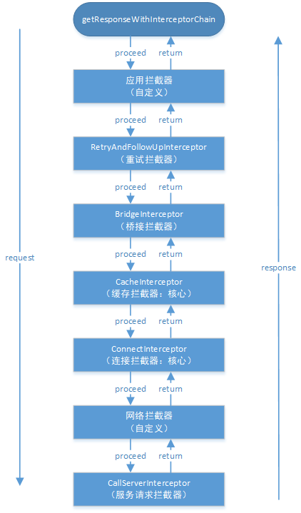

本文OkHttp源码基于3.14.x,版本下载地址：okHttp 3.14.x
前言
上一篇文章OkHttp 3.14.x 源码解析-执行流程我们分析了OKHttp的整体执行流程，也从中提到了OKHttp会调用各拦截器来获取响应数据，但是并没有展开来讲，所以这篇文章我们将来详细分析各个拦截器的职责。
从上篇文章我们知道OKHttp有七大拦截器，按添加顺序为：
- 应用拦截器：可在构造okHttpClient对象时通过addInterceptor配置
- 重试，重定向拦截器：RetryAndFollowUpInterceptor
- 桥接拦截器：BridgeInterceptor
- 缓存拦截器：CacheInterceptor：
- 连接拦截器：ConnectInterceptor
- 网络拦截器：可在构造okhttpClient对象时通过addNetworkInterceptor配置
- 服务请求拦截器：CallServerInterceptor
其中第1个应用拦截器和第6个网络拦截器为自定义配置，在这里我们将假设用户没有自定义配置拦截器，故不分析这两个拦截器，下面将按顺序详细分析其它五个拦截器。
一、RetryAndFollowUpInterceptor
由于这里我们假设没有加入自定义拦截器，所以RetryAndFollowUpInterceptor将成为责任链中最先被调用的拦截器，这个拦截器的主要作用就是负责失败重试以及重定向，我们先看看RetryAndFollowUpInterceptor的intercept方法
RetryAndFollowUpInterceptor#intercept
1 | public Response intercept(Chain chain) throws IOException { |
上面的流程可以概括为：
- 启动无限循环，表示不断重试
- 通过Transmitter准备连接，初始化了一些连接需要的对象
- 执行下一个拦截器，也就是桥接拦截器BridgeInterceptor的intercept方法
- 根据服务器返回的消息判断请求是否可以重定向
- 如果值得重试就会新建或复用之前的连接在下一次循环中进行请求重试，否则将服务器返回的响应数据包装后返回给用户
- 重试次数超过20次，抛出异常
上面需要注意的是Transmitter这个类，这个类相当于管理类，维护了服务器连接，并发流和请求之间的关系，在这个拦截器中调用了它来准备连接，其实只是初始化了ConnectInterceptor拦截器中所需要用到的ExchangeFinder对象，实际上并没有用到这些类，也许你又有疑问了，那么这个Transmitter又是在哪里实例化的呢？
这个就涉及到了上篇文章所讲的OkHttp的执行流程了！你可以不断的往上追踪，然后最终会在构造Call对象这一流程见证它的出生！
RealCall#newRealCall
1 | static RealCall newRealCall(OkHttpClient client, Request originalRequest, boolean forWebSocket) { |
然后在Transmitter构造时还会伴随着连接池connectionPool的构造，在这里我们不必深究这些类的具体用途。因为当它们传递到连接拦截器ConnectInterceptor时才真正发挥出它们的作用！
二、BridgeInterceptor
Bridge在计算机网络中的意思是网桥，但是在OkHttp中这个拦截器可不像计算机网络中的网桥一样工作在数据链路层，在OKhttp中这个拦截器的主要作用是桥接应用层和网络层，添加必要的头。简单的来说，就是对请求进行包装，并将服务器响应转换成用户友好的响应。
BridgeInterceptor#intercept
1 | public Response intercept(Chain chain) throws IOException { |
这个拦截器的主要工作为：
- 从用户请求中获取网络请求构造者
- 为网络请求构造者添加请求头，比如Content-type,Content-Length,Host,Connection，Cookie
- 执行网络请求，调用缓存拦截器CacheInterceptor的intercept方法
- 如果有自定义配置Cookie,解析并保存Cookie
- 从网络响应中获取网络响应构造者
- 处理响应构造者，比如Gzip解压缩
- 返回最终网络响应
这里需要注意的是Gzip解压缩和生成新的网络响应时都会交给okio这个库来处理的。这个okio你可以简单的当成是Java中IO操作的升级版，它能够更加方便，快速的访问和处理数据。如果有想要进一步了解的可以看看这篇文章OKHttp源码解析(五)–OKIO简介及FileSystem，感觉这个博主写的OkHttp源码系列还是挺不错的！
三、CacheInterceptor
按顺序我们本来应该要介绍缓存拦截器CacheInterceptor的intercept方法了，但是在介绍缓存拦截器之前很有必要先了解一下Http缓存机制，因为缓存拦截器的缓存策略与之密切相关。
1. Http缓存机制
如果想要深入了解Http缓存机制，可参考浏览器缓存机制这篇文章，讲的不错而且通俗易懂！
1.1 缓存相关字段
- Cache-control：缓存的最大存活时长
- Expires：表示缓存过期时间（当Cache-control与Expires同时存在时，Cache-control优先级更高）
- Last-Modified-Since：服务器响应头携带，表示最后修改时间
- If-Modified-Since：请求头携带，该值等于上一个响应头的Last-Modified-Since
- Etag：服务器响应头携带，值为当前文件的唯一标识（服务器生成）
- If-None-Match：请求头携带，值为上一个响应头的Etag
其中Expires，Last-Modified-Since，If-Modified-Since是属于HTTP1.0
Cache-control，Etag，If-None-Match属于HTTP1.1
所以一开始都是先检查HTTP1.1的字段，如果有HTTP1.1的字段就不再检查HTTP1.0的字段
另外Last-Modified-Since和If-Modified-Since，Etag和If-None-Match是两两配对的
1.2 缓存机制
这一张是网上找到的非常经典的Http缓存机制图：

整体流程如下：
- 首先检查Cache-control和Expires，判断是否过期
- 如果没有过期，则直接从缓存中读取数据。否则检查响应头HTTP1.1字段Etag
- 存在Etag,向服务器请求，请求头携带If-None-Match,该值等于上一个响应的Etag
- 服务器收到请求，对比请求头的If-None-Match和当前数据的唯一标识，然后返回对应状态码
- 服务器返回200，返回携带新的Etag的完整响应并更新缓存，表示当前缓存已经失效
- 服务器返回304，只返回响应头，表示当前缓存虽然过期但是有效可用
- 不存在Etag,检查响应头HTTP1.0字段Last-Modified
- 响应头存在Last-Modified,向服务器请求，请求头携带If-Modified-Since,该值等于上一个响应的Last-Modified。
- 服务器收到请求，对比请求头的If-Modified-Since和服务器最后的修改时间，然后返回对应状态码
- 服务器返回200，返回携带新的Last-Modified的完整响应并更新缓存，表示当前缓存已经失效
- 服务器返回304，只返回响应头，表示当前缓存虽然过期但是有效可用
- 响应头不存在Last-Modified,表示该请求为第一次请求,则向服务器请求获取数据，然后将数据缓存起来
2. OkHttp的缓存策略
讲完HTTP的缓存机制后，让我们来看看HTTP缓存机制在OkHttp缓存策略的体现
2.1 原理
OKHttp的缓存策略是由缓存策略类CacheStrategy的networkRequest和cacheResponse的值来决定的
| 策略 | networkRequest | cacheResponse | 结果 |
|---|---|---|---|
| 网络请求策略 | not-null | null | 需要进行网络请求 |
| 缓存策略 | null | not-null | 不进行网络请求，直接使用缓存 |
| 同时使用网络请求策略和缓存策略 | not-null | not-null | 响应头包含Etag或Last-Modified，需要网络请求进行验证是否可以使用缓存 |
| 不使用网络请求和缓存策略 | null | null | 表明不进行网络请求，并且缓存不存在或者过期，此时一定会返回503错误 |
2.2 详细实现
缓存策略的主要实现是在于CacheStrategy这个策略类,由于CacheStrategy使用了工厂模式的设计模式，会提供get方法给外部来获取到当前策略类的实例，所以我们直接看CacheStrategy内部类Factory的get方法
CacheStrategy.Factory#get
1 | public CacheStrategy get() { |
在get方法会首先调用getCandidate来获取当前的缓存策略,我们直接看这个方法
CacheStrategy.Factory#getCandidate
1 | private CacheStrategy getCandidate() { |
可以发现在OkHttp中的缓存策略其实与HTTP缓存机制类似。大概分为这四种情况：
1. 使用网络请求策略
- 没有缓存
- HTTPS丢失握手
- 响应不能缓存
- 请求头的cache-control设置了不缓存
- 请求头包含If-modified-Since或If-None-Match字段，意味着本地缓存过期，需要通过服务器验证其有效性
- 响应头不包含Last-Modified或Etag字段，此时为第一次请求
2.使用缓存策略
持续时间+最短刷新时间<上次刷新时间+最大验证时间，意味着缓存虽然过期，但是还是有效的，只是会在响应头添加warning
3. 同时使用网络请求和缓存策略
响应头包含Last-Modified或Etag字段，然后会在请求头添加与之配对的If-Modified-Since或If-None-Match字段，然后使用网络请求策略和缓存策略
4. 不使用网络请求和缓存策略
网络请求策略不为null，但是请求头的cache-control设置了只用缓存的情况
3. 缓存拦截器主要流程
终于要分析CacheInterceptor缓存拦截器了，有了前面的知识储备，这个拦截器的分析就会比较得心应手了，我们直接看这个拦截器的intercept方法来看看缓存拦截器的主要流程。
CacheInterceptor#intercept
1 | public Response intercept(Chain chain) throws IOException { |
从上面发现，一开始我们是通过全局变量cache来获取缓存，它是InternalCache类型的变量，而InternalCache是一个接口，在OkHttp只有一个实现类Cache。在Cache内部，使用了DiskLruCache算法来将数据存储到磁盘中，这个算法就不多说了，有兴趣的可以看郭神的博客Android DiskLruCache完全解析，硬盘缓存的最佳方案
在这里我们只需要知道Cache类提供了磁盘缓存的增删改查的基本功能，所以我们可以通过InternalCache的get方法得到磁盘缓存中的数据。而OkHttp默认是没有设置磁盘缓存的，可以通过构建OkHttpClient时进行配置。
当获取到磁盘缓存的数据后就调用了CacheStrategy工厂类的get方法来获取OkHttp的缓存策略，返回的缓存策略有四种，即缓存策略原理中提到的四种情况，然后就根据这四种情况做相应的处理。总体流程图如下：
- 首先从磁盘缓存中取数据（可能为null）
- 获取缓存策略
- 不使用网络请求和缓存策略，直接返回504
- 只使用缓存策略，直接使用缓存的数据
- 使用网络请求策略，执行下一个拦截器ConnectInterceptor的intercept方法
- 同时使用网络和缓存策略，根据响应头的状态码决定使用哪个响应
- 如果状态码为304，则缓存过期但有效，直接使用缓存，并且更新缓存
- 否则，直接使用网络请求后的响应
- 如果在OkHttpClient构建时设置了磁盘缓存目录，则将网络请求后的结果缓存到磁盘上
这么一看OkHttp的缓存机制其实就是基于HTTP缓存机制与Cache缓存的结合体，到这里缓存拦截器的整体流程也就梳理了一遍！
四、ConnectInterceptor
连接拦截器，顾名思义，是用来连接服务器的，但并没有发送请求到服务器。我们直接看ConnectInterceptor的intercept方法.
ConnectInterceptor#intercept
1 | public Response intercept(Chain chain) throws IOException { |
看上面的代码，估计这时候你应该乐坏了，心里可能偷偷乐着终于碰到这么少代码量的拦截器了。但是在这里只能告诉你连接拦截器可是个表里不一的拦截器，表面上看起来很少，实际上大部分的功能都封装起来了。但是我们不得不承认这个表里不一的拦截器是OkHttp效率和框架的核心。这个拦截器的主要任务就是：
- 打开指定服务器的网络连接
- 交给下一个拦截器CallServerInterceptor来处理请求和获取数据的逻辑
3.1 找到可用的连接
从上面可以发现，在这里我们调用了transmitter的newExchange方法，而transmitter我们早在第一个拦截器重试拦截器RetryAndFollowUpInterceptor时就提到过它了，我们直接看newExchange方法
Transmitter#newExchange
1 | //返回一个新的交换，封装了新的请求和响应 |
在这个方法中，会通过exchangeFinder的find方法找到一个可用的连接，而exchangeFinder就是在RetryAndFollowUpInterceptor拦截器中通过调用Transmitter的prepareToConnect方法创建的。
Transmitter#prepareToConnect
1 | public void prepareToConnect(Request request) { |
我们继续看下去，接下来会调用exchangeFinder的find方法找到一个连接
Exchange
1 | public ExchangeCodec find( |
上面的方法中，我们可以发现在这个拦截中会不断的循环来找到一个可用的连接。可用连接的优先级为：当前连接>连接池中的连接>新的连接。大致的流程如下：
- 如果当前连接可用，则优先选择当前连接
- 如果当前连接不可用，则从连接池中获取连接
- 如果连接池获取失败，则创建一个新的连接，并进行TCP和TSL握手，然后放到连接池中
从流程中我们也可用发现连接复用可以省去TCP和TLS握手的过程，从而提高网络访问的效率。而能做到这点少不了连接复用池的功劳，让我们来见识一下这个连接复用池的是如何来管理连接的！
3.2 连接复用池：RealConnectionPool
1. 引用计数
在OkHttp中使用了类似引用计数的方式来跟踪Socket流的调用，这里的计数对象是Transmitter类，而Transmitter其实就是连接管理类
Transmitter
1 | void acquireConnectionNoEvents(RealConnection connection) { |
上面计数加一和计数减一的操作其实是在改变List<Reference
2. 主要变量
RealConnectionPool
1 | private static final Executor executor = new ThreadPoolExecutor(0 /* corePoolSize */, |
这里我们需要看ConnectionPool类来找到默认的空闲socket最大连接数和keepAlive时间
ConnectionPool
1 | public final class ConnectionPool { |
通过ConnectionPool类我们可以发现默认空闲的socket最大连接数为5，socket的保活时间为5分钟，并且在构造ConnectionPool对象时实际构造的是RealConnectionPool对象。
3. 缓存操作
3.1 放入连接
RealConnectionPool#put
1 | void put(RealConnection connection) { |
放入连接的工作有两个：
- 如果当前连接池没有在清理连接，则先使用线程池执行清理任务并且将正在清理的标志位设置为true
- 将当前连接添加到双端队列中
3.2 清理连接
在放入连接时我们会执行清理连接的操作，会调用线程池执行cleanupRunnable的任务，让我们先看看这个任务
RealConnectionPool
1 | //线程不断调用cleanup来进行清理，并返回下次需要清理的间隔时间 |
可以发现一旦清理任务开始执行后，就会每隔指定的间隔时间进行清理连接。我们来看看cleanup方法
RealConnectionPool#cleanup
1 | long cleanup(long now) { |
上面的清理任务的流程简单概括成下面几点：
- 遍历连接池中的连接
- 根据连接的引用计数来计算活跃连接个数和空闲连接个数
- 寻找空闲时间最久的连接
- 如果空闲连接的空闲时间超过5分钟或者空闲连接数超过5个的话，则将空闲时间最久的连接从连接池中移除
- 如果有空闲连接，则返回空闲最长连接的到期时间（到期时间=保活时间-最长空闲时间）
- 没有空闲连接并且有活跃连接，则表示连接池的所有连接都在使用中，过5分钟后的保活时间后再清理
- 如果连接池的连接个数为0，则跳出循环
3.3 获取连接的引用次数
在清理连接时通过调用pruneAndGetAllocationCount方法来判断空闲连接和活跃连接，因此让我们看看其内部实现
RealConnectionPool#pruneAndGetAllocationCount
1 | private int pruneAndGetAllocationCount(RealConnection connection, long now) { |
这里主要是遍历连接的弱引用列表，根据列表中的Transmitter是否为null来移除对应的弱引用，如果最后弱引用列表为0表示该连接为空闲连接，否则则表示该连接为活跃连接，并返回该活跃连接的引用计数。
五、CallServerInterceptor
服务请求拦截器CallServerInterceptor是最后一个拦截器，其主要作用就是向服务器请求并获取数据。我们直接看CallServerInterceptor的intercept方法
CallServerInterceptor#intercept
1 | public Response intercept(Chain chain) throws IOException { |
可以发现这个方法并没有再继续调用责任链的处理方法，而是直接返回了最终的响应给上一级的拦截器。
总结
到这里，我们就把责任链的五大拦截器分析完毕了，在这五大拦截器中要重点关注缓存拦截器和连接拦截器，这两个拦截器有很多知识值得我们去学习，比如缓存拦截器中的缓存机制和连接拦截器的连接复用等。通过对拦截器的分析，也对责任链模式有了更深的理解，每一个拦截器都对应一个index不同的结点（RealInterceptorChain） ,每个结点（RealInterceptorChain）的proceed方法会产生下一个结点（RealInterceptorChain），然后调用当前结点对应拦截器的intercept方法，并将下一结点传进去。故如果某个拦截器调用了realChain的proceed方法，实际会调用下一结点对应拦截器的intercept方法，直到拦截器列表迭代完成。通过这种责任链的方法，每个拦截器对请求进行不同的处理，从而得到最终的响应数据。

参考博客：